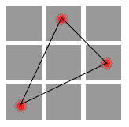
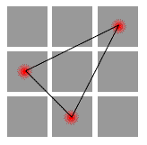
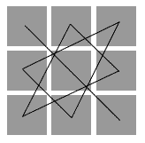
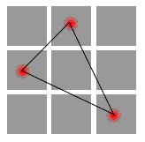
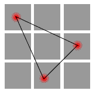

Игра Matrix Game относится к жанру математических головоломок. Её достоинством является новизна и оригинальность идеи: компьютерной реализации данной игры до сих пор не существовало. Для успешной игры не нужно обладать какими-то особыми математическими познаниями, достаточно школьного курса. Также вся необходимая информация будет изложена ниже.
В процессе игры происходит заполнение матрицы цифрами. Матрица - это таблица m x n клеток.В нашем случае m = n=3. Игроки поочерёдно ставят цифры от 1 до 9 в незаполненные ячейки матрицы, причём каждая цифра может использоваться только один раз. Определитель матрицы (или детерминант) – это некоторое число, характеризующее определённую комбинацию цифр в матрице. Оно может быть как положительным, так и отрицательным. Целью игры для одного игрока является получение положительного определителя матрицы, для другого – отрицательного. Первый и второй игороки, соответственно, называются "игроком плюс" и "игроком минус" или положительным и отрицательным игроками.
Для победы необходимо знать правило подсчёта определителя. Наиболее разумно пользоваться так называемым "методом звезды".
В матрице существуют несколько наборов ячеек - три своих для положительного игрока и, соответственно, три своих для отрицательного. Эти наборы часто называют диагоналями. Подсчёт происходит перемножением чисел в ячейках набора и суммирование по всем наборам каждого игрока. Определитель равен полученному числу для игрока "плюс" минус число для игрока "минус".
Наборы позиций см. ниже.


Если наложить все линии, связывающие ячейки матрицы, то получим рисунок, очень похожий на звезду. Именно отсюда пошло такое необычное название метода.



Как видите, позиции для положительного и отрицательного игроков симметричны, поэтому запомнить их несложно.
Итак, для того чтобы выиграть (получить мин./макс. определитель в матрице), необходимо получить максимальное произведение чисел на своих диагоналях и минимальное - на диагоналях противника. А вот как это сделать - зависит уже от игрока.
Human vs Human - играть "человек против человека".
Human vs Comp - сразиться с компьютерным игроком (Элиза).
Options - настройка режимов игры.
About - информация об авторах
Exit - выход из игры
Random Side Selection - выбор типа игрока ("плюс" или "минус") производится случайным образом.
P- Is Allowed To Start - игрок "минус" может начинать. Не всем нравится это правило, поэтому, по-умолчанию оно отключено.
Свое имя можно ввести путём набора его на виртуальной клавиатуре. Жёлтые кнопки с красными точками прокручивают список букв. Другой способ - выбрать имя из списка четырёх наиболее используемых имён. Вводимые имена автоматически добавляются в начало списка.
Для подтверждения ввода, нажмите кнопку OK.
Установка часла производится путём выбора клетки (подсвечивается синим цветом) и последующим выбором цифры из доступных в нижней панели. Имена игроков показываются красным цветом на панели чуть выше. В режиме двух игроков рядом с именем положительного игрока горит знак "плюс", если его ход. Аналогично для отрицательного. В режиме одного игрока символы "плюс" и "минус" горят всегда, лишь напоминая игроку его тип.
Значок "x" на красной кнопке внизу позволяет прервать игру и выйти в главное меню.
Здесь показывается имя победителя и его счёт. Для победителя "минус" счёт отрицательный, для "плюс" - положительный. Можно сыграть ещё раз, нажав кнопку "Play again" или завершить игру, и выйти в главное меню.
Спасибо всем, кто, не щадя своего времени и сил, тестировал игру во время лекций и семинаров. :) Благодарю Владиуса за любезно предоставленную картинку-фон. Отдельная благодарность моим преподавателям из лицея №1580, объяснившим мне принципы этой игры.
Если у вас появились какие-либо пожелания, комментарии или идеи, пишите на pocketmatrix@mail.ru. Дополнительная информация на сайте игры: http://www.matrixgame.h15.ru
Данная программа распространяется по принципу DONATIONWARE. Это не означает её бесплатности. Перед оплатой программы у Вас есть возможность посмотреть полную версию без каких-либо ограничений. Если игра Вам понравилась, то Вы можете заплатить некоторую сумму автору. Размер суммы зависит только от Вашего желания.
Если Вы решили купить программу, то, пожалуйста, переведите необходимую сумму на кошелёк Webmoney R884758594970 (оплата рублями РФ) или Z182095485649 (оплата долларами США) , WM ID 144394605486. Заранее благодарен!